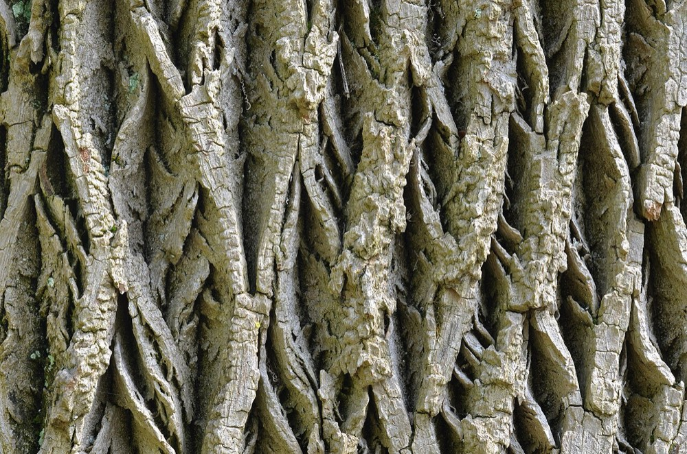
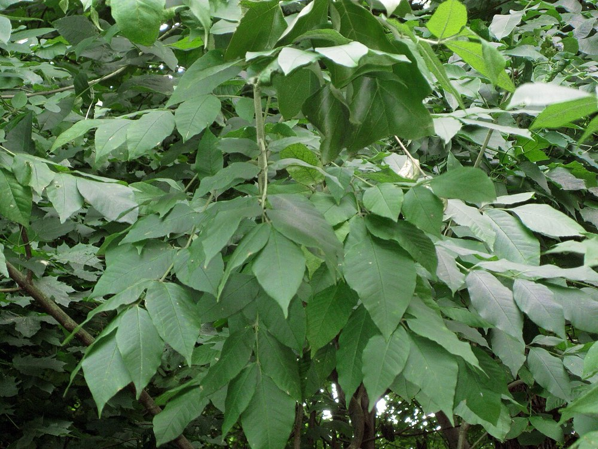

White Ash
Fraxinus americana
- Kind
- tree · Oleaceae
- Native to Vermont
- yes
- Legal status
- Native; no special legal status found. Threatened by emerald ash borer; see Emerald Ash Borer. (checked 2026-10-30)
- Look-alikes
- Green ash; Black ash; Blue ash; Boxelder
Pictures


Names
White ash, Fraxinus americana. One of three native Vermont ashes (white, green and black).
Range and habitat
Native. A large tree up to 80 feet, often with a straight, clear trunk on good sites and a narrow, oblong crown. White ash prefers well-drained sites (seedling guide); black ash is on poorly drained ground; green ash on floodplains and riparian areas.
How to identify (by season; look-alikes and the key difference)
- Opposite, compound leaves: pinnately compound, with seven leaflets on the factsheet (the seedling guide says mature ash usually have 7 to 9, and young ones fewer, from 3 to 9). Leaflets ovate to somewhat lance-shaped, nearly hairless, green above and slightly paler below.
- Bark: ashy gray to brown with interlacing corky ridges forming obvious diamonds; older trees may be scaly.
- Fruit: a flattened one-winged samara.
- Look-alikes: green ash, black ash, blue ash and boxelder. White ash leaf scars on mature trees are U-shaped; black and green ash scars are often only slightly indented at the top (seedling guide).
- Ash trees under attack by the emerald ash borer show woodpecker flecking, top dieback and D-shaped exit holes (Emerald Ash Borer).
By growth stage (trees: seedling, sapling, pole-size, mature or old; what to look at in each)
| Stage | What to look at | What you see |
|---|---|---|
| Small seedling | leaf form, veins, bud | The smallest ash seedlings often have simple leaves; older class-one seedlings may have compound leaves with a much larger end leaflet. Vein pattern on young ash is somewhat arcuate and consistent; look for a small, stout brown or black bud forming through summer. |
| Larger seedling | leaflets, bud, leaf scar | Almost always compound with 3 to 9 leaflets; black or brown pointed buds; leaf scar shape differs by species. |
| Sapling and pole-size | twig, bud | Stout gray-olive-green hairless twigs; large brown terminal bud flanked by two laterals; the factsheet does not describe young bark. |
| Mature and old trees | bark, form | Diamond-pattern ridged bark; straight clear trunk, narrow crown. |
| Winter, any age | twig, bud, leaf scar | Opposite twigs; round leaf scars notched at the top with the lateral buds in the notch. |
| Fruit (fall) | samaras | Matures in fall, disperses over winter. |
In plans where two or three ash species grow together, an ash seedling cannot be named to species with confidence: record it as ash, with photos and notes on neighboring trees.
Through the year
Dates are typical for Vermont and shift with elevation and year; "approximate" means the source gave a season and the dates are a translation of it.
| When | What | Look for | What to do | Dates |
|---|---|---|---|---|
| May 10 to Jun 5 | flower (identify) | Petalless, light green to purplish flowers in clusters, opening after the leaves unfold; male and female on separate trees. | - | approximate |
| Sep 15 to Nov 30 | seed-drop (identify) | Dry, flattened, one-winged seeds (samaras) in hanging clusters, maturing in fall and dispersing over winter. | - | approximate |
| Nov 1 to Mar 31 | dormant (identify) | Opposite, stout gray-olive-green hairless twigs; large brown terminal bud with leathery scales, flanked by two lateral buds; round leaf scars notched at the top; bark with interlacing corky ridges forming diamonds. | - | approximate |
Signs on the land (tracks, scat, browse, nests, holes, calls)
Woodpecker flecking and top dieback may mean emerald ash borer (Emerald Ash Borer).
Role in the forest (what it eats, what eats it, what it needs)
Ash twigs and leaves are key deer foods (White-tailed Deer); ash seeds are a winter food for turkeys (Wild Turkey). Where deer are overabundant, regeneration of white ash may fail (Landowner's Guide).
What helps it thrive (light, soil, shelter, food and the trees it uses)
- Light: mature white ash is shade intolerant but its seedlings are shade tolerant, which lets it regenerate in gaps; advance regeneration grows best when about 60 percent of the overstory is removed, and the species responds well to shelterwood cutting (FEIS).
- Soil: grows best on deep, well-drained, moist soils with other hardwoods and has a strong affinity for soils high in nitrogen and calcium; in the Northeast it is on middle slopes and reduced or absent on dry, cold ridges and mountaintops.
- Seed: the seeds (samaras) stay viable on the forest floor for 3 to 4 years.
- Threat: the review does not discuss the emerald ash borer; see Emerald Ash Borer for what Vermont sources say about it.
Managing for it (habitat practices) and living with it (conflicts and damage)
About 5 percent of Vermont's trees are ash and most infested ash are expected to die (Emerald Ash Borer). What to do with ash in a stand is a question for the plan and the forester.
Legal status
No special status found.
Sources
- Virginia Tech Dendrology, White ash: https://dendro.cnre.vt.edu/dendrology/syllabus/factsheet.cfm?ID=46 (read 2026-10-30)
- J. Robertson and J. Truong, A Guide to the Seedlings of New England (FEMC, 2021): https://www.uvm.edu/femc/attachments/project/999/seedling_guide-compressed_1.pdf
- USDA Forest Service, Fire Effects Information System, Fraxinus americana: https://www.fs.usda.gov/database/feis/plants/tree/fraame/all.html (read through a summarizing fetch 2026-11-01)
What this page is based on
Kind of source: mixed (Virginia Tech factsheet; New England seedling guide; the VTinvasives emerald ash borer page)
What was read: Virginia Tech Dendrology factsheet (ID 46) for white ash, read through a summarizing fetch on 2026-10-30, and the ash pages of A Guide to the Seedlings of New England (read as text). The factsheet gives no young-bark description and no habitat; its leaflet length (8 to 12 inches) is as printed and is long for a leaflet (it may be the whole leaf), so treat it as unverified. Calendar windows translate 'after the leaves unfold', 'fall' and 'winter'. Habitat needs (light, soil, regeneration, response to cutting) added 2026-11-01 from the USDA Forest Service Fire Effects Information System species review (summarizing fetch); the review is national in scope and the Northeast details are those it names.
Last checked: 2026-10-30
Vermont land and forest reference, built 2026-11-01. Rules and dates here are summaries, not legal advice; dates shift with elevation and year. Photo and recording credits · Note: _reference/US-VT/Species/White Ash.md